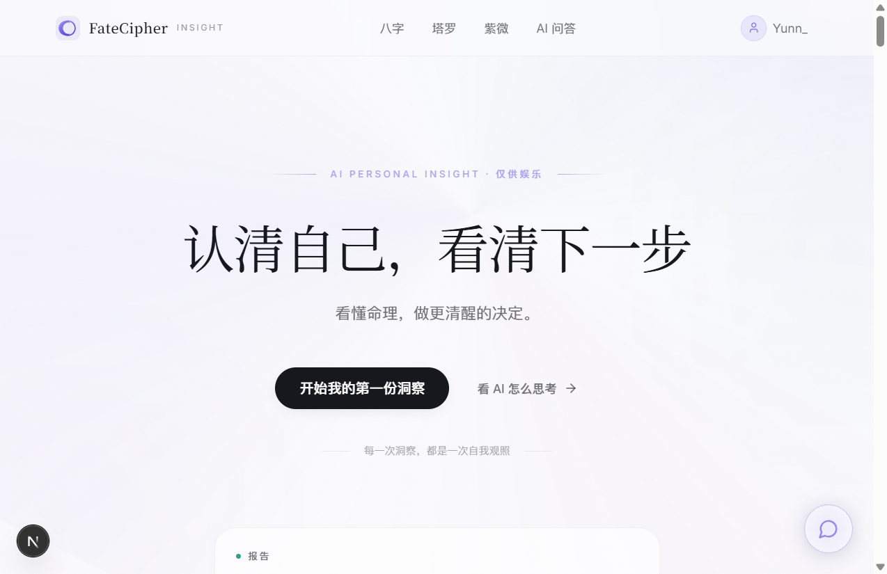
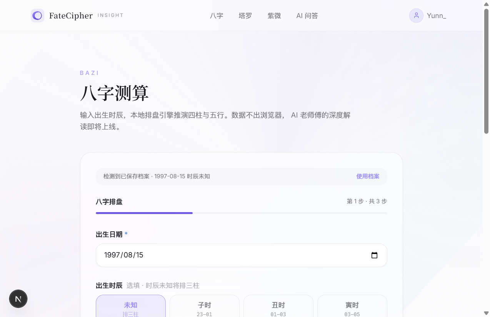

FateCipher · AI 命理洞察平台
一个人、一个周末、一个想法 → Next.js 15 + AI 大模型 + 命理排盘引擎。这是 FateCipher 从 0 到 1 的完整思考记录。
为什么做这个产品
市面上的命理产品分两类：
| 类型 | 代表 | 问题 |
|---|---|---|
| 传统排盘网站 | 某果网、某子平 | 堆术语、广告多、UI 停留在 2010 年。排出来的四柱看不懂，只能自己百度 |
| AI 算命 app | 某小算、某大师 | 要付费、要注册、不透明。AI 怎么得出这个结论的——完全黑盒 |
FateCipher 的差异化
- ✓ AI 深度思考可见：前 6 段结构化推演（五行分析 → 日主旺衰 → 喜忌判断 → 大运流年 → 风险提醒 → 行动建议）全部展示出来，最后才给大号行动建议。不瞎蒙、不黑盒
- ✓ 数据不出浏览器：八字排盘本地引擎，紫微排盘本地算。你输的出生时间存在 localStorage，AI API 只接收排好的四柱/星盘，不碰原始数据
- ✓ 四种玩法一个入口：八字、紫微、塔罗、AI 问答——首页直接露出，不用藏二级菜单
- ✓ 免费 + 无注册门槛：首页八字直接排、塔罗直接抽。想让 AI 结合你的八字来答，才需要 signIn 建档
产品定位与功能定义
一句话定位
FateCipher = 命理工具 + AI 老师傅。用八字 / 紫微 / 塔罗把你的出生数据结构化成「命盘」，再用 AI 把命理语言翻译成人话，让你对当下和下一步看得更清。
用户画像
| 画像 | 痛点 | FateCipher 怎么解 |
|---|---|---|
| 25–32 岁 职场/情感交叉期 | "工作要不要跳？""ta 是不是我对的人？" 搜索出来的命理内容太散、太玄 | AI 老师傅结合你的命盘四柱来答，不是瞎蒙 |
| 第一次接触命理 想"试试看" | 排盘网站把你吓跑——看不懂术语、不知道自己盘里有啥 | AI 问答开场主动问"要不要看看你今年事业怎么走"，帮你翻译盘面 |
| 老用户 想换个方向看看 | 算了八字又想试试塔罗，每个都要重填一次出生信息 | 填一次档案，四种玩法共用（v0.2 实现） |
四大玩法
| 玩法 | 输入 | 输出 |
|---|---|---|
| 八字测算 | 出生日期 + 时辰 | 四柱排盘 + 五行分析 (本地引擎) |
| 紫微斗数 | 出生日期 + 时辰 + 性别 | 紫微命盘 + 十二宫解读 |
| 塔罗占卜 | 一个问题 + 抽牌 | 三张牌阵解读 |
| AI 问答 | 你的困惑 | AI 回答 + 深度思考推演 |

首页 · Hero + 四玩法入口（点击进入对应功能）
首页排版分析
首页完整排版
Hero 区决策
| 决策点 | 选型 | 为什么 |
|---|---|---|
| Slogan | "认清自己，看清下一步" | 16 字，行动动词锚定预期。不讲"算命"讲"洞察" |
| 主 CTA | "开始我的第一份洞察" → /fortune/bazi | 八字最权威（四柱绑定出生信息），对新用户转化路径最短 |
| 次 CTA | "看 AI 怎么思考" → #ai-demo | 先展示 AI 思考过程给信心，再转化。降低"这 AI 会不会瞎说"的门槛 |
| 导航栏 | 4 产品入口直接露出 | 只有 4 个玩法，完全放得下。露出 = 降低决策成本 |
| 品牌色 | 白底 #fbfbfd + 紫色 #6b46c1 | 紫 = 神秘（命理感）+ 科技（AI 感）。禁黄/橙/红（太"娱乐算命"） |
| 字体 | 标题思源宋体 / 正文无衬线 | 宋体 = 传统文化 + 权威感；无衬线 = 现代 + AI 调性。双语体切换形成层次 |
四玩法排序 rationale
- 八字排第一：对"我到底是什么命"的原始需求最直接，转化路径最短
- 塔罗排第二：比紫微门槛低（不需要精确时辰），适合"我就想问个简单的"
- 紫微排第三：排盘最复杂（需要精确出生时间 + 性别），放到后面给已经建档的老用户
- AI 问答排最后：消费型工具——需要建档后才能发挥"个性化"优势，依赖前面几个玩法先帮用户建档
页面逻辑总览
八字测算 /fortune/bazi

八字排盘结果页：四柱 + 五行 + 十神 + 大运
紫微斗数 /fortune/ziwei

紫微斗数页面
塔罗占卜 /fortune/tarot

塔罗占卜页面
AI 问答 /ask

AI 问答开场：前 6 段结构化推演 + 大号行动建议
技术选型决策
| 选型 | 决定 | 理由 |
|---|---|---|
| 框架 | Next.js 15 (App Router) | SSR/SSG 对 SEO 友好（命理内容 Google 有搜索量）；App Router 是 Next 新范式 |
| 语言 | TypeScript | 一个人全栈，类型安全 = 少踩坑 |
| 样式 | Tailwind CSS v4 | Utility-first，单人快速迭代 |
| 组件库 | shadcn/ui | 复制粘贴进项目，不绑死 |
| AI API | DeepSeek (SSE 流式) | 性价比高；SSE 流式 = 用户看得到 AI 一步步思考 |
| 数据存储 | localStorage（无后端） | 0→1 先验证产品，省掉部署/运维。后续接后端时 ProfileStore 的 async 签名已对齐，无痛迁移 |
| 测试 | Vitest + RTL + jsdom | 和 Next 集成好 |
从 0 到 1 核心路径
v0.0 项目初始化（一个周末）
├─ Next.js 脚手架 + Tailwind v4 + shadcn/ui
├─ 首页 Hero + 四玩法骨架页面（空壳路由）
└─ 八字本地排盘引擎（关键：四柱 + 五行）
v0.1 功能优化（一个晚上）
├─ AI 问答深度思考重构（前 6 段推演 + 大号行动建议）
├─ 导航栏 UI 优化（4 入口直接露出）
└─ 品牌名全局替换（xuanji → fatecipher）
单人全栈迭代节奏
| 阶段 | 周期 | 产出 | 工作方式 |
|---|---|---|---|
| 需求 & 设计 | 半天 – 1 天 | PRD + 低保真流程图 | 写 PRD = 倒逼想清楚边界 case；写不出来 = 没想清楚 |
| 开发 | 1 – 2 天 | TypeScript + Tailwind | 一个模块一个模块做，每步 commit，保证随时能跑 |
| 测试 | 半天 | Vitest + 手动测试 | 重点测边界 |
| 上线 | 10 分钟 | git push → GitHub | 单人项目 = 直接 main 分支，跳过 PR |
核心经验
- 本地存储 + 抽象层是 0→1 最优解：先跑起来，后续接后端时 API 层已对齐，数据迁移写一次就行
- AI 深度思考 = 差异化：市面命理产品只给结果，我们让用户看到 AI 怎么一步步推演的
- 品牌设计要调性统一：紫色（神秘+科技）+ 宋体标题（传统）+ 无衬线正文（现代），三种元素组合成 FateCipher 独有的视觉语言
- 四玩法不做二级菜单：只有 4 个玩法，首页直接露出 = 降低决策成本。用户一眼看到能做什么
- SSE 流式是必须的：AI 生成内容让用户一步步看到，比 loading spinner 体验好 10 倍